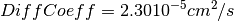
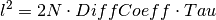

This fitting function models the dynamic structure factor for a particle undergoing jump diffusion [1].

where:
 - Intensity scaling, a fit parameter
- Intensity scaling, a fit parameter - Residence time, a fit parameter
- Residence time, a fit parameter - Momentum transfer, an attribute (non-fitting)
- Momentum transfer, an attribute (non-fitting)At 298K and 1atm, water has  and  .
.
A jump length can be associated: , where  is the
dimensionality of the diffusion problem (
is the
dimensionality of the diffusion problem ( for diffusion in a volume).
for diffusion in a volume).
| [1] |
|
| Name | Default | Description |
|---|---|---|
| Height | 1.0 | scaling factor |
| DiffCoeff | 2.3 | Diffusion coefficient (10^(-5)cm^2/s) |
| Tau | 1.25 | Residence time (ps) |
| Centre | 0.0 | Shift along the X-axis |
| Name | Type | Default | Description |
|---|---|---|---|
| Q | |||
| WorkspaceIndex |
(double, default=0.3) Momentum transfer
Example - Single spectrum fit:
The signal is modeled by the convolution of a resolution function
with an elastic signal plus this jump-diffusion model. We include a linear background.
The value of the momentum transfer is contained in the loaded data
![S(Q,E) = I \cdot R(Q,E) \otimes [EISF\delta(E) + (1-EISF)\cdot TeixeiraWaterSQE(Q,E)] + (a+bE)](../../_images/math/a05301eff6495ecd659013d7510c4359b5848d84.png)
from __future__ import (absolute_import, division, print_function)
resolution=Load("irs26173_graphite002_res.nxs")
data=Load("irs26176_graphite002_red.nxs")
function="""
(composite=Convolution,FixResolution=false,NumDeriv=true;
name=TabulatedFunction,Workspace=resolution,WorkspaceIndex=0,Scaling=1,XScaling=1,ties=(Scaling=1,XScaling=1);
( name=DeltaFunction,Centre=0,ties=(Centre=0);
name=TeixeiraWaterSQE,Centre=0,ties=(Centre=0),constraints=(DiffCoeff<3.0)
)
);
name=LinearBackground"""
# Let's fit spectrum with workspace index 5. Appropriate value of Q is picked up
# automatically from workspace 'data' and passed on to the fit function
fit_output = Fit(Function=function, InputWorkspace=data, WorkspaceIndex=5,
CreateOutput=True, Output="fit", MaxIterations=100)
params = fit_output.OutputParameters # table containing the optimal fit parameters
# Check some results
DiffCoeff = params.row(6)["Value"]
Tau = params.row(7)["Value"]
if abs(DiffCoeff-2.1)/2.1 < 0.1 and abs(Tau-1.85)/1.85 < 0.1:
print("Optimal parameters within 10% of expected values")
else:
print(DiffCoeff, Tau, fit_output.OutputChi2overDoF)
Example - Global fit to a synthetic signal:
The signal is modeled by the model of the previous example. The resolution is modeled as a normal distribution. We insert a random noise in the jump-diffusion data. Finally, we choose a linear background noise. The goal is to find out the residence time and the jump length
from __future__ import (absolute_import, division, print_function)
import numpy as np
"""Generate resolution function with the following properties:
1. Gaussian in Energy
2. Dynamic range = [-0.1, 0.1] meV with spacing 0.0004 meV
3. FWHM = 0.005 meV
"""
dE=0.0004; FWHM=0.005
sigma = FWHM/(2*np.sqrt(2*np.log(2)))
dataX = np.arange(-0.1,0.1,dE)
nE=len(dataX)
rdataY = np.exp(-0.5*(dataX/sigma)**2) # the resolution function
Qs = np.array([0.3, 0.5, 0.7, 0.9, 1.1, 1.3, 1.5, 1.9]) # Q-values
nQ = len(Qs)
resolution=CreateWorkspace(np.tile(dataX,nQ), np.tile(rdataY,nQ), NSpec=nQ, UnitX="deltaE",
VerticalAxisUnit="MomentumTransfer", VerticalAxisValues=Qs)
"""Generate the signal of a particle undergoing jump diffusion.
1. diffusion coefficient = 1.0 * 10^(-5) cm^2/s.
2. residence time = 50ps (make it peaky in the selected dynamic range)
3. linear background noise, up to 10% of the inelastic intensity
4. Up to 10% of noise in the quasi-elastic signal
5. Assume <u^2>=0.8 Angstroms^2 for the Debye-Waller factor
"""
diffCoeff=1.0 # Units are Angstroms^2/ps
tau=50.0; u2=0.8; hbar=0.658211626 # units of hbar are ps*meV
qdataY=np.empty(0) # will hold all Q-values (all spectra)
for Q in Qs:
centre=2*dE*(0.5-np.random.random()) # some shift along the energy axis
EISF = np.exp(-u2*Q**2) # Debye Waller factor
HWHM = hbar * diffCoeff*Q**2 / (1+diffCoeff*Q**2*tau)
dataY = (1-EISF)/np.pi * HWHM/(HWHM**2+(dataX-centre)**2) # inelastic component
dataY = dE*np.convolve(rdataY, dataY, mode="same") # convolve with resolution
dataYmax = max(dataY) # maximum of the inelastic component
dataY += EISF*rdataY # add elastic component
noise = dataY*np.random.random(nE)*0.1 # noise is up to 10% of the signal
background = np.random.random()+np.random.random()*dataX # linear background
background = 0.1*dataYmax*(background/max(np.abs(background))) # up to 10%
dataY += background
qdataY=np.append(qdataY, dataY)
data=CreateWorkspace(np.tile(dataX,nQ), qdataY, NSpec=nQ, UnitX="deltaE",
VerticalAxisUnit="MomentumTransfer", VerticalAxisValues=Qs)
"""Our model is:
S(Q,E) = Convolution(resolution, TeixeiraWaterSQE) + LinearBackground
We do a global fit (all spectra) to find out the radius and relaxation times.
"""
# This is the template fitting model for each spectrum (each Q-value):
# Our initial guesses are diffCoeff=10 and tau=10
single_model_template="""(composite=Convolution,FixResolution=true,NumDeriv=true;
name=TabulatedFunction,Workspace=resolution,WorkspaceIndex=_WI_,Scaling=1,Shift=0,XScaling=1;
(name=DeltaFunction,Height=0.5,Centre=0,constraints=(0<Height<1);
name=TeixeiraWaterSQE,Q=_Q_,Height=0.5,Tau=10,DiffCoeff=5,Centre=0;
ties=(f1.Height=1-f0.Height,f1.Centre=f0.Centre)));
name=LinearBackground,A0=0,A1=0"""
# Now create the string representation of the global model (all spectra, all Q-values):
global_model="composite=MultiDomainFunction,NumDeriv=true;"
wi=0 # current workspace index
for Q in Qs:
single_model = single_model_template.replace("_Q_", str(Q)) # insert Q-value
single_model = single_model.replace("_WI_", str(wi)) # insert workspace index
global_model += "(composite=CompositeFunction,NumDeriv=true,$domains=i;{0});\n".format(single_model)
wi+=1
# Parameters DiffCoeff and Tau are the same for all spectra, thus tie them:
ties=['='.join(["f{0}.f0.f1.f1.DiffCoeff".format(wi) for wi in reversed(range(nQ))]),
'='.join(["f{0}.f0.f1.f1.Tau".format(wi) for wi in reversed(range(nQ))]) ]
global_model += "ties=("+','.join(ties)+')' # insert ties in the global model string
# Now relate each domain(i.e. spectrum) to each single model
domain_model=dict()
for wi in range(nQ):
if wi == 0:
domain_model.update({"InputWorkspace": data.name(), "WorkspaceIndex": str(wi),
"StartX": "-0.09", "EndX": "0.09"})
else:
domain_model.update({"InputWorkspace_"+str(wi): data.name(), "WorkspaceIndex_"+str(wi): str(wi),
"StartX_"+str(wi): "-0.09", "EndX_"+str(wi): "0.09"})
# Invoke the Fit algorithm using global_model and domain_model:
output_workspace = "glofit_"+data.name()
Fit(Function=global_model, Output=output_workspace, CreateOutput=True, MaxIterations=200, **domain_model)
# Extract DiffCoeff and Tau from workspace glofit_data_Parameters, the output of Fit:
nparms=0
parameter_ws = mtd[output_workspace+"_Parameters"]
for irow in range(parameter_ws.rowCount()):
row = parameter_ws.row(irow)
if row["Name"]=="f0.f0.f1.f1.DiffCoeff":
DiffCoeff=row["Value"]
nparms+=1
elif row["Name"]=="f0.f0.f1.f1.Tau":
Tau=row["Value"]
nparms+=1
if nparms==2:
break # We got the three parameters we are interested in
# Check nominal and optimal values are within error ranges:
DiffCoeff = DiffCoeff/10.0 # change units from 10^{-5}cm^2/s to Angstroms^2/ps
if abs(diffCoeff-DiffCoeff)/diffCoeff < 0.1:
print("Optimal Length within 10% of nominal value")
else:
print("Error. Obtained DiffCoeff=",DiffCoeff," instead of",diffCoeff)
if abs(tau-Tau)/tau < 0.1:
print("Optimal Tau within 10% of nominal value")
else:
print("Error. Obtained Tau=",Tau," instead of",tau)
Output:
Optimal parameters within 10% of expected values
Optimal Length within 10% of nominal value
Optimal Tau within 10% of nominal value
Categories: FitFunctions | QuasiElastic
C++ header: TeixeiraWaterSQE.h (last modified: 2020-03-20)
C++ source: TeixeiraWaterSQE.cpp (last modified: 2020-03-20)